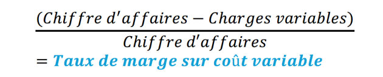

Quelle prise en compte du temps dans la gestion de l’organisation ?
Horizon temporel dans l’organisation
Segmentation du temps en périodes
Calcul du taux de marge sur coût variable

Exemple : Contexte de l’organisation (situation de départ)
Une organisation commerciale présente les données annuelles suivantes :
Données | Montant |
|---|---|
Chiffre d’affaires annuel | 240 000 € |
Charges fixes | 72 000 € |
Charges variables | 120 000 € |
Nombre de jours d’activité dans l’année | 360 jours |
Objectif : analyser la prise en compte du temps et le risque économique.
Méthode : Calculs des indicateurs clés liés au temps et au risque
1. Taux de marge sur coût variable (TMCV)
\(TMCV=(240000−120000)/240000=0,50\)
On peut l’écrire également 50%, puisque 50/100=0,50
Fondamental : Interprétation
Chaque euro de chiffre d’affaires génère 0,50 € pour couvrir les charges fixes et le résultat
Plus le TMCV est élevé, plus l’organisation est résistante au risque
Calcul du seuil de rentabilité
Définition : Seuil de rentabilité
Chiffre d’affaires minimum à réaliser pour ne pas être en perte.
Méthode :
\(SR=72000/0.50=144000€\)
Fondamental : Cela signifie que :
Chiffre d’affaires < 144 000 € = pertes
Chiffre d’affaires > 144 000 € = création de valeur financière
Le Seuil de Rentabilité donne une vision du risque économique.
Calcul du point mort en jours
Définition : Point mort
Date à laquelle le seuil de rentabilité est atteint.
Méthode :
Point mort\(=240000/144000*360=216\) jours
Le point mort est atteint au bout du 216e jour de l’année.
Fondamental : Interprétation
L’organisation commence à être rentable après 216 jours
Plus le point mort est proche du début de l’année, plus le risque est faible
Ici, le point mort est plutôt tardif, donc le risque est modéré.
Calcul de la marge de sécurité
Définition : Marge de sécurité
Baisse maximale du chiffre d’affaires supportable sans être en perte.
Méthode :
Marge de sécurité\(=240000−144000=96000\)€
Fondamental : Interprétation
L’organisation peut supporter une baisse de 96 000 € de CA
Plus la marge de sécurité est élevée, plus l’organisation est résiliente face au risque
Remarque : Grille d’analyse synthétique (attendue au bac STMG)
Indicateur | Résultat | Interprétation |
|---|---|---|
TMCV | 50% soit 0,50 | Bonne capacité à couvrir les charges fixes |
Seuil de rentabilité | 144 000 € | Niveau de CA minimal élevé |
Point mort | 216 jours | Rentabilité atteinte tardivement |
Marge de sécurité | 96 000 € | Protection correcte face aux aléas |
Situation globale | Organisation exposée mais maîtrisant le risque | |
Analyse du lien temps - risque
Fondamental : Le temps influence directement le risque économique.
Plus le point mort est tardif et plus le risque est élevé ;
Une amélioration du temps (délais, productivité) peut réduire le risque ;
Mais une accélération excessive peut générer :
risques sociaux ;
risques financiers ;
risques environnementaux.
Gestion du risque par l’organisation
Méthode : Démarche attendue
Identifier le risque
Interne / externe
Financier, opérationnel, stratégique…
Mesurer le risque
Probabilité
Impact
Délai d’apparition
Mettre en place des actions
Plans d’action
Veille informationnelle
Ajustement des décisions
Exemple : Exemple de conclusion à l’exercice précédent
L’organisation prend en compte le temps dans sa gestion en analysant le seuil de rentabilité, le point mort et la marge de sécurité. Bien que la marge de sécurité permette d’absorber une baisse du chiffre d’affaires, le point mort relativement tardif traduit l’existence d’un risque économique. La gestion du risque repose donc sur l’anticipation, la veille et l’adaptation des décisions.